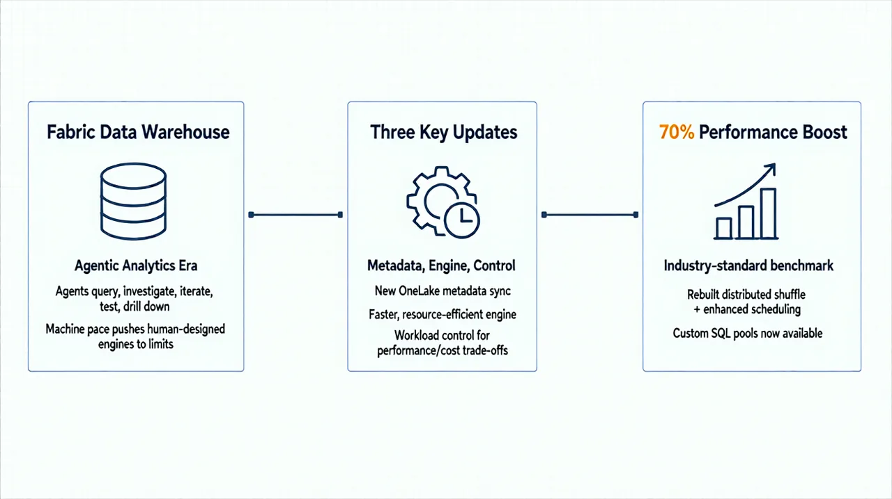
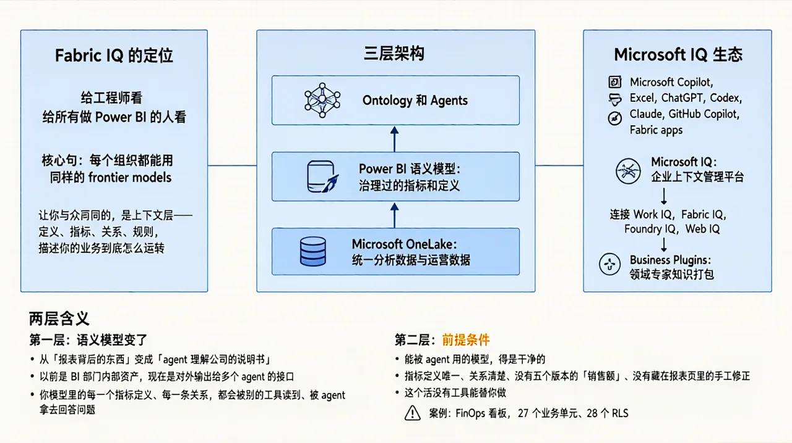
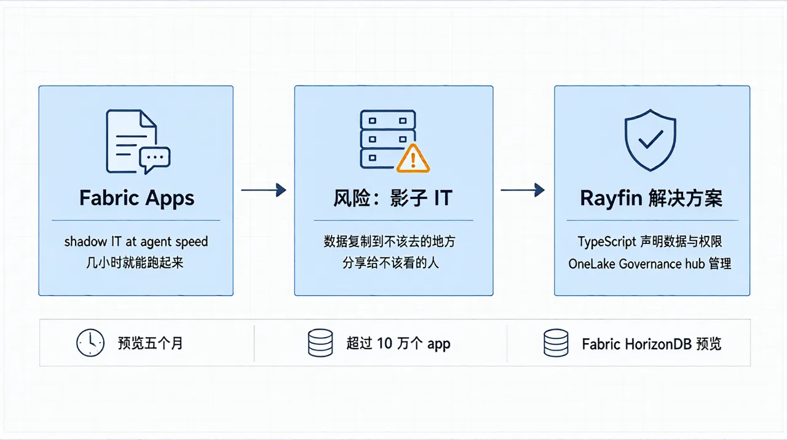
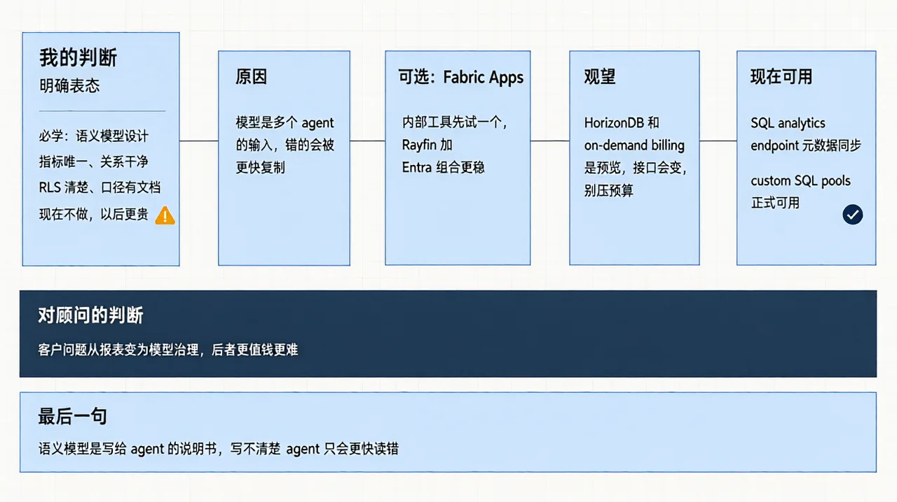

五条 Ignite 更新：语义模型成了 AI 的入口
Ignite 2026 那天 Fabric 发了五篇博客，讲性能、IQ、Apps、客户数和数据库。合起来是一个动作：把 Fabric 改成给 agent 供上下文的底座。语义模型没被替代，它成了 AI 的入口。

这五篇博客，其实是同一篇。
11 月 17 日，Microsoft Ignite 2026 第一天，微软 Fabric 团队一次发了五篇。五篇开头是同一句话：如果还没读 Arun Ulag 的 Ignite 总文，先去读。拆开看，一条讲数据仓库性能，一条讲 Fabric IQ，一条讲 Fabric Apps 正式可用，一条讲客户数，一条讲数据库更新。合起来只讲了一个动作：把 Fabric 从给人看报表的平台，改成给 agent 供上下文的地基。
最反常识的结论藏在中段。过去两年行业里一直在讨论「AI 会不会替代语义模型」，这五篇给出的答案是相反的：语义模型没有过时，它成了 AI 读一家公司业务的那本书。
一、先看账本：44,000 个付费客户
新上任领导 Fabric 的作者在博客里给了两个数：超过 44,000 个付费客户，比去年同期增长超过 50%；超过 19,000 个客户同时在使用 Microsoft Foundry 和 Fabric。
这两个数字要放在一起看。
44,000 说明 Fabric 已经走过了试点阶段，采购的人开始按平台而不是按功能下单。19,000 说明「BI 平台」和「AI 平台」在客户那边已经合并成一件事：数据在这边，智能应用和 agent 在那边，底座是同一个。比例接近 43%，不低。
但博客没有给活跃数。付费客户不等于天天在用的人，这是所有平台官方博客的通病。看到 50% 的增长，先记住这是合同层面，不是使用层面。
二、再问一句：为什么这时候提性能
五条里最技术的一条是 Fabric Data Warehouse。它的开头给了一个判断：agentic analytics 已经到来。agent 会查询、调查、迭代、测试、下钻，不等人类输入。这种机器节奏的活动，把为人节奏设计的分析引擎推到了极限。
原文有一句话很直接：查询一等待，agent 的调查就暂停。
所以这一轮改动集中在三处：更新的 OneLake 元数据、更快更省资源的引擎、让你在性能和成本之间做取舍的工作负载控制。
具体到能用的东西：
SQL analytics endpoint 的新元数据同步正式可用。OneLake 里的表对 endpoint 始终可见，查询能拿到新数据。元数据在秒级内刷新，也在查询那一刻刷新。同时支持 LOB 类型和 time travel，兼容 Delta checkpoint V2。最后这一条别跳过——它说明这套改造是跟着 Delta 生态走的，不是另起炉灶。
引擎侧，重建的分布式 shuffle 加上增强的任务调度，配合之前已有的分布式 bitmap filter 和基于用量的资源估算修正，过去一年在行业标准基准上把性能提升了 70%。
这个 70% 要打个折看。原文只写「industry-standard benchmark」，我抓到的正文里脚注是空的，基准名没有。记下这个数，但别拿它当 SLA。
比 70% 更实在的是 custom SQL pools 正式可用。你可以设置最大资源份额，按应用或语句类型把工作负载分开。翻译一下：agent 的批量查询可以和人打开的报表隔开，不会一边跑 agent 一边让看板转圈。对做数仓的人来说，这条的日常价值大于基准测试。
另外两个是成本控制。cache cooldown 本月推出，能控制 SQL pool 级别的缓存保留时长——数据在间歇活动之间保持热，或者缩短保留来减少闲置分配。on-demand billing 在预览，按消费计费，带 capacity 级预算控制和工作区级上限；到达上限后查询排队，资源释放再恢复。说得客气，实际是在替 agent 装电表。
还有一句值得记住：Fabric Data Warehouse 是 2020 年代从零构建的，不是 Synapse 改名。这解释了为什么它敢重建 shuffle、能改调度——地基是自己的。

三、语义模型的位置变了
如果说性能那条是给工程师看的，Fabric IQ 这条是给所有做 Power BI 的人看的。
原文的核心句：每个组织都能用同样的 frontier models。让你与众不同的，是上下文层——定义、指标、关系、规则，描述你的业务到底怎么运转。
Fabric IQ 把业务上下文分成三层：Microsoft OneLake 把分析数据和运营数据放在一个统一的层里；Power BI 语义模型提供治理过的指标和定义；上面是 ontology 和 agents。
这次 Ignite 把 Fabric IQ 推到了更多地方：Microsoft Copilot、Excel、ChatGPT 和 Codex、Claude、GitHub Copilot、Fabric apps。同时发布了 Microsoft IQ，一个企业上下文管理平台，把 Work IQ、Fabric IQ、Foundry IQ、Web IQ 连起来，再配上 business plugins，让领域专家把知识打包一次，所有 agent 都能用。
这里有两层意思。
第一层，语义模型从「报表背后的东西」变成了「agent 理解公司的说明书」。以前它是 BI 部门内部的资产，现在它是对外输出给多个 agent 的接口。你模型里的每一个指标定义、每一条关系，都会被别的工具读到、被 agent 拿去回答问题。
第二层，这事有前提。能被 agent 用的模型，得是干净的：指标定义唯一、关系清楚、没有五个版本的「销售额」、没有藏在报表页里的手工修正。这个活没有工具能替你做。我做 FinOps 看板那会儿，27 个业务单元、28 个 RLS 角色，光是把「成本」这一个口径统一，就来回对了很多轮。模型不干净，接进去的 agent 不会变慢，只会更快地给出错的数。

四、应用层：agent 造 app，快得会出事
Fabric Apps 正式可用的那篇，有一句话是全组最狠的：shadow IT at agent speed，agent 速度的影子 IT。
原文的场景很具体。让 coding agent 把团队跟踪供应商问题的那张 Excel 变成 app，几小时就能跑起来，以前要几天。但把这个 app 放到业务面前是另一回事：它需要数据库、登录、访问公司数据并且尊重已有权限，IT 还得知道它存在。agent 自己接这些，会走最短路径，常见的做法是把数据复制到不该去的地方，或者分享给不该看的人。乘以每个团队的每个 agent，就是 agent 速度的影子 IT。
所以 Fabric Apps 这次的重点不是「能造」，是「造完在哪」。用开源 SDK 和 CLI Rayfin 构建，部署后作为 Fabric app 运行，和你的数据在一起，在 Microsoft Entra 登录后面，在已有的治理之下。Rayfin 把后端和界面放在同一个项目里：在 TypeScript 里声明数据和谁能访问，它生成数据库和 API，一条 Rayfin up 部署整套。给管理员的是 OneLake Governance hub 里的 Apps 视图，可以看全组织，也可以 block 或 unblock。
数字是：预览五个月，超过 10 万个 app 建出来了。
同一批发布里还有几个：Fabric HorizonDB 进入预览，是给 agent 和现代应用用的 serverless PostgreSQL；Database Hub 正式可用，统一发现、监控和管理数据库，SQL 和 PostgreSQL 的 database agents 在预览；另外还有文件存储、CSP 设置和 private sites。
我的看法：10 万个 app 建得快不是问题，问题是这里面有多少还在跑、谁在维护。治理视图是给 IT 的止痛药，不是疫苗。真正的分界线只有一条——这个 app 有没有一个负责人。

五、五条放一起看
拆开看是五个功能，放一起是三条线。
数据地基层：Data Warehouse 的元数据同步、引擎和资源控制，OneLake 统一分析数据和运营数据。含义层：Fabric IQ 和 Power BI 语义模型，管定义、指标、关系和规则。行动层：Fabric Apps、Rayfin、HorizonDB、Database Hub，让 agent 和人都能在数据旁边做事。
三条线指向同一个产品形态：agent 的运行时。微软这一轮卖的不是「又多了几个功能」，是一句承诺——让 agent 在你的数据上干活，同时不让你的数据跟着它跑出去。
单看任何一条都推不出这个结论。只读 Apps 那篇，会以为这是个低代码工具；只读 IQ 那篇，会以为这是 Copilot 的推广。
但有几件事必须说清楚。五篇是同一场发布会、同一个开头、同一个声音，本质上是发布包的五个章节，不是五个独立判断。没有第三方基准，没有客户名字，70% 的基准名缺失，10 万 app 的活跃率没有，44,000 付费客户没有活跃数。这些是官方口径，不是审计过的数字。
还有一个细节值得注意：五条里有三条在讲「控制」——cache cooldown、按需计费的工作区上限、custom SQL pools 的资源份额、管理员的 block 按钮。微软自己很清楚，把 agent 放开的代价是账单和事故。
六、我的判断
明确表态。
必学：语义模型设计。指标唯一、关系干净、RLS 清楚、口径有文档。这是这五条里唯一一件「现在不做，以后更贵」的事。原因不复杂：模型已经是多个 agent 的输入，错的模型会被更快、更广地复制。如果你手上有旧的语义模型要收拾，语义模型治理比换工具更值得排进这季度。
可选：Fabric Apps。内部工具可以先试一个，尤其是那种到现在还在 Excel 里传来传去的流程。Rayfin 加 Entra 的组合，比自己拼一套低代码平台要稳。
观望：HorizonDB 和 on-demand billing，都是预览，不进生产。预览的意思是接口会变，别把预算压在预览上。
现在就能用的：SQL analytics endpoint 的元数据同步是正式可用，custom SQL pools 也是正式可用。这两条不需要等，找一套测试环境先验证，尤其是报表刷新时间和 agent 批量查询撞在一起的那段时间。
对顾问的判断：客户的问题会变。以前是「帮我做个报表」，接下来是「我的模型能不能被 agent 用」。后者是审计加治理的活，比做报表值钱，也比做报表难。想接这类项目，先把自己的作品集里补上模型治理的案例，比多发几张看板截图有用。
最后一句。语义模型是写给 agent 的说明书。写不清楚，agent 不会读不懂，它只会更快地读错。
